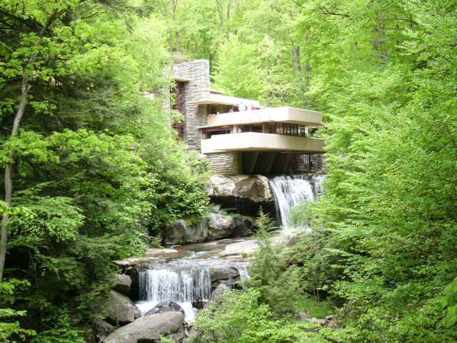

Euclidean Space
The Dichotomy Between Linearity and the Organic
Non-sedentary or nomadic societies that are always on the move, do not build permanent structures, and thus never fall under the spell of the linear. But it is not hard to find square angles in nature: trees grow at right angles to the earth. Sedentary agricultural societies, in their endeavor to build ever more lasting and stable domiciles and public buildings, needed to master engineering concepts like plumb lines and vertical torque, which led to an intuitive grasp of geometric principles and mechanics. They learned, for example, the properties of rectangular stones, which, though not organic, i.e. rarely found in nature, were a more stable building material than irregular, rounded stones—applied knowledge that was later abstracted and formalized by Archimedes and by Euclid in his Elements, a description of geometry still studied in high school classrooms today. The use of mechanics and geometry in architecture reached it pinnacle in Greek masterpieces like the Erechtheum and the Parthenon. In the latter columns are tilted inward by three inches to enhance the sensation of gravitational equilibrium.
Sinuous Dragon Lines |
By way of contrast, traditional Chinese have always harbored dark suspicions of obtrusive, non-organic structures. According to the doctrine of feng-shui (wind and rain), straight geometric lines are anathema, so that cities like Brasilia, Paris and Washington laid out in a geometrical grid are doomed to noxious influences of supernatural forces. Note the upswept eaves of oriental temples. Whereas sinuous dragon lines are supposed to confer good luck and auspicious days ahead.
For an example closer to home, instead of building square boxes on round hills, the most recent trend in domestic architecture has been a reverence for nature expressed in split level houses that follow the curvature of the earth, and cantilevering planes that conform to local geological formations. Leading exponents in this trend were the Greene brothers and Frank Lloyd Wright.
 |
Falling Water by Frank Lloyd Wright |